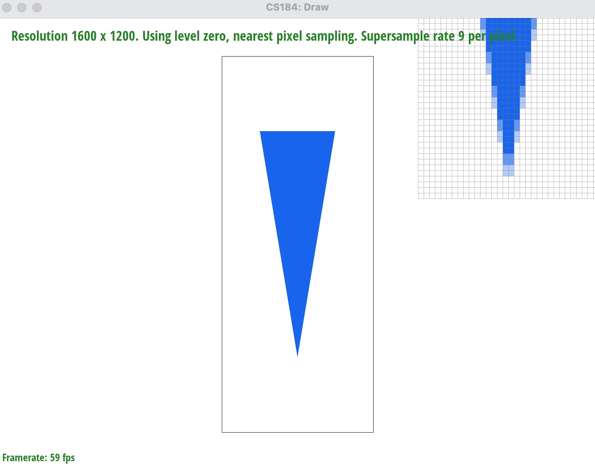
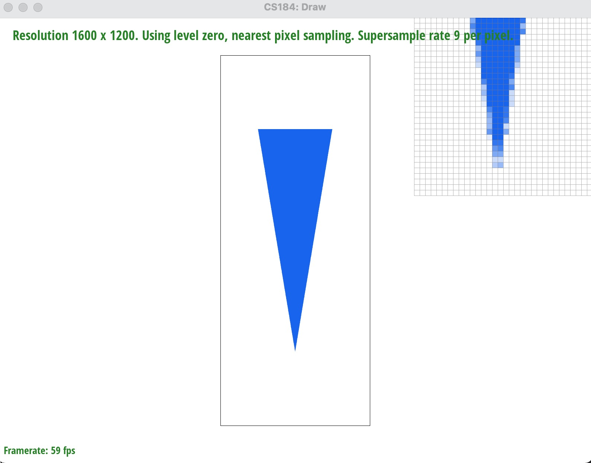
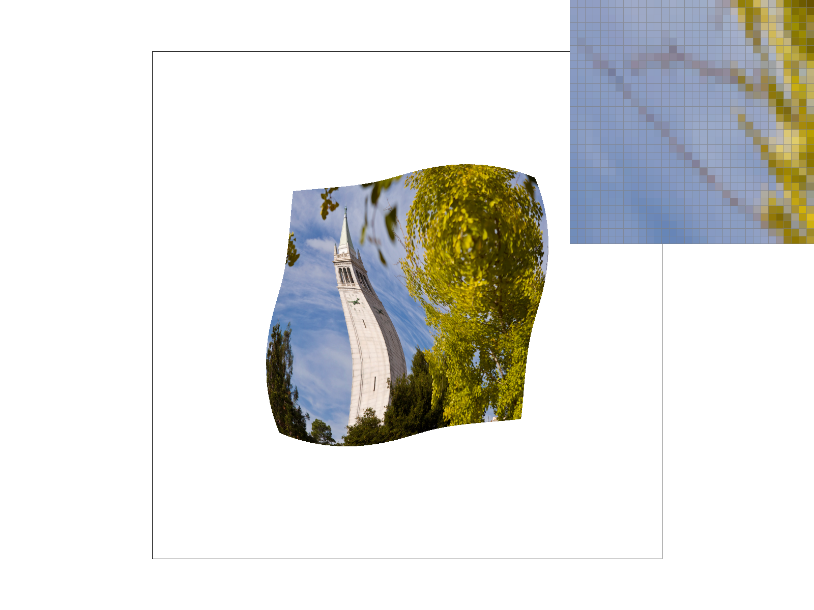
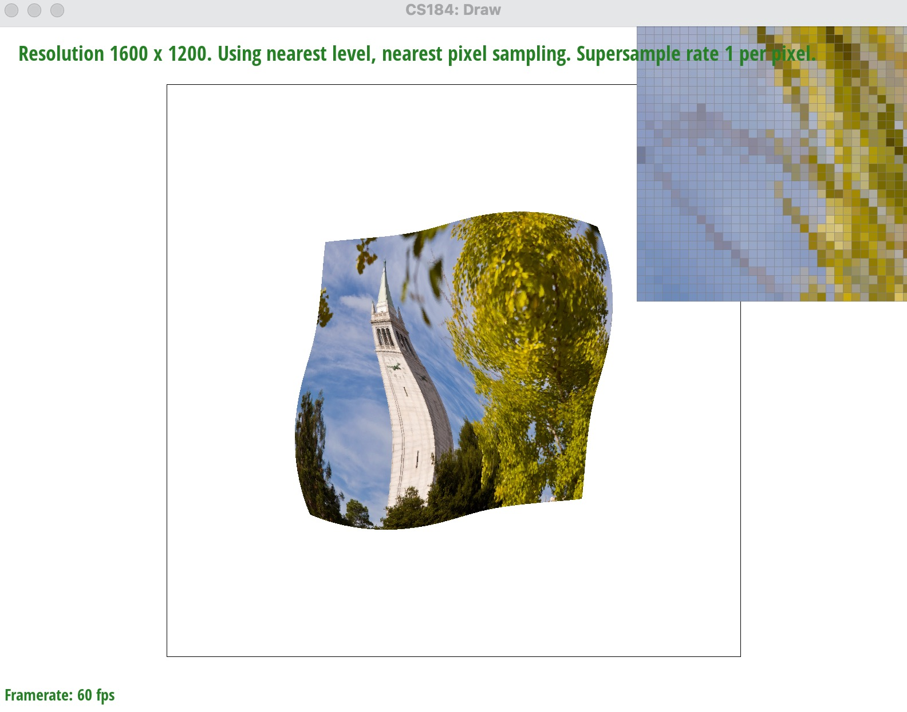
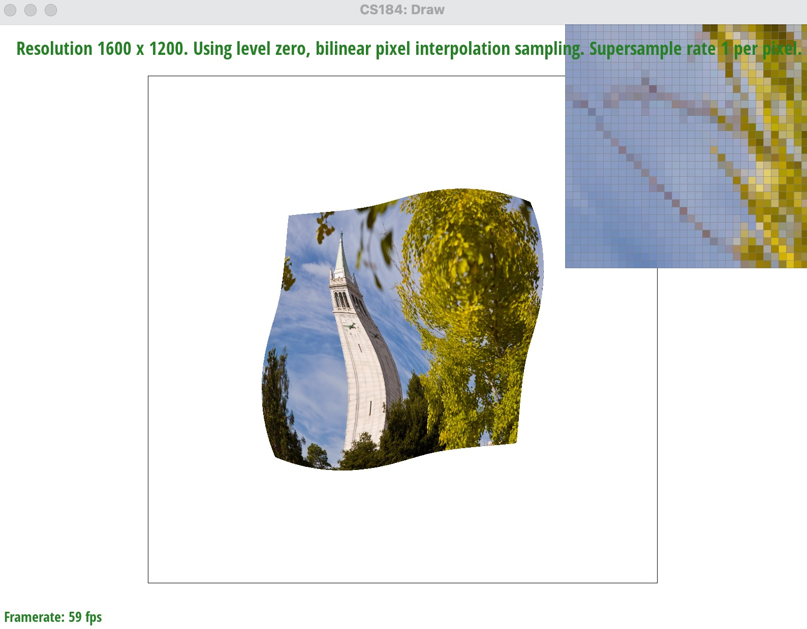
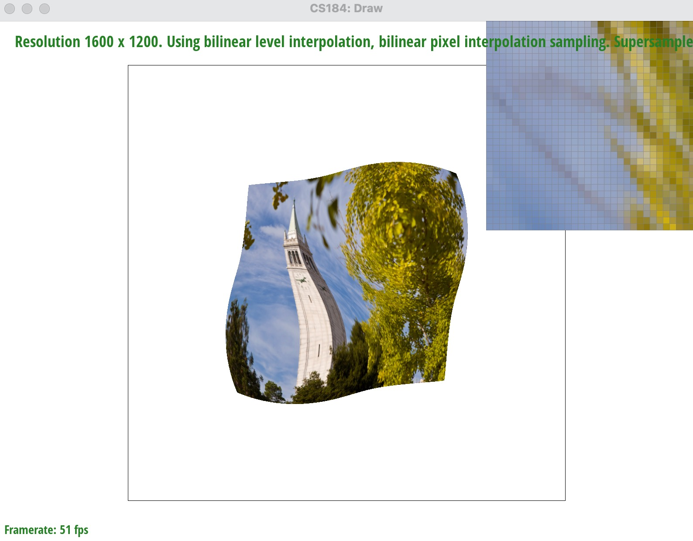

Overview
Implementation Overview
In this assignment, we first learned how to rasterize a single-color triangle without supersampling. Then, we learned the supersampled triangle rasterization and implementation of translate/scale/rotate transform. After that, we rasterize multi-color triangles with barycentric interpolation, and rasterize textured triangles with texture filtering and level sampling. Two basic methods are linear interpolation and nearest method. I also implement the extra credit for Task 1 and Task 3, optimizing the efficiency to rasterize a triangle using segment intersections instead of point-in-triangle tests.
Framework Overview
As a whole, we've built the rasterization part in this assignment. In the framework, the DrawRend renderer will redraw the GUI window at a frequency or after some key input. When redrawing, the renderer will invoke the methods we implemented to rasterize all the points, lines, and triangles (triangulation is given in the framework).
My Thoughts
I learned many interesting things when completing the assignment. I learned a framework to transform SVG objects into NDC and NDC into screen-space. In the framework, I implemented the details of rasterization using supersampling for antialiasing, bilinear interpolation and nearest method for texture sampling, mipmaping for level sampling. The assignment not only help me review these concepts but also give me an opportunity to understand how they work actually. Besides, I also gain experience in solving detailed problems like how to deal with the boundary of triangles and data out of range. Extra credits are greatly designed but I only solve that of Task 1 due to the time issue. But the efficiency improvement in triangle rasterization also help me practice a lot in algorithm designs and programming.
Section I: Rasterization
Part 1: Rasterizing single-color triangles
Algorithm Description
First, we can find out the bounding box of the triangle by find the minimum/maximum x,y values of the three given points of the triangle. Then, check each pixel (x,y) in the bounding box whether the sample point (x+0.5,y+0.5) is inside the triangle. If the sample point is inside the triangle, we fill the pixel with the given color of the triangle.
Algorithm Effciency
Since we first find out the bounding box inside the viewplot. We only check those pixels in the bounding box whether the sample point of the pixel is inside the triangle in O(1) time (constant time). Notice that the constant runtime of point-in-triangle test is large since it takes three line test and each includes a lot of calculation. Although this method takes a lot of time when the number of triangles is very large (e.g. svg/basic/test3.svg), the algorithm is no worse than one that checks each sample within the bounding box of the triangle since we ignore the part of triangle that outside the frame.
Screenshot
We can find the screenshot of drawing svg/basic/test4.svg without supersampling below.
|
|

|

|

|
Extra Credit
The optimized algorithm is to calculate the intersection of the three edges of a triangle with the axis y equal to each possible value. All the pixels on the axis with x-value between the minimum x-value of intersection and the maximum x-value of intersection must be also inside the triangle since triangles are convex hulls. In this way, we don't need to calculate that much for point-in-triangle test and need to only fill the pixels in the triangle (about half the bounding box).
|
|

|
We can use chrono::high_resolution_clock::now() to record the start time and end time of svg.draw() inside the redraw() function of DrawRend class. Then we output the time cost each time we redraw the viewer. The optimization is much more obvious for svg files with more triangles to rasterize. For example, the SVG file svg/basic/test3.svg has many triangles to rasterize and the original algorithm takes about 11 times more runtime than the optimized algorithm to redraw the viewer. The optimization has about 1000% improvement in execution time performance.
| SVG Files: | svg/basic/test3.svg | svg/basic/test4.svg | svg/basic/test5.svg | svg/basic/test6.svg |
| Original time: | 46 ms | 3 ms | 11 ms | 9 ms |
| Optimized time: | 4 ms | 0 ms | 1 ms | 1 ms |
Part 2: Antialiasing triangles
Algorithm Description
In supersampling, we divide each pixel into smaller grids and select the centers of each grid as a sample point. The number of the grids is the sample rate. We take the mean value of the color value of the multiple sample points as the final image color at each pixel. This help us to reduce the large frequency changes in the corresponding frequency space of the image and reduce the jaggies.Implementation Explanation
We implement supersampling by adding two loops within the iteration of each pixel to iterate all the sample points of the pixel. We also need to enlarge the size of sample buffer to be sample rate times the frame buffer size since the number of sample points for each pixel is the constant sample rate. We now check each sample point whether it is inside the triangle or not and fill the corresponding sample of the pixel with the color if the sample point is inside the triangle. In the end, we use resolve_to_framebuffer method to tranfer the sample_buffer into the final image by averaging all its sample points' color to get the color of a pixel.Screenshot
Below are the screenshots of images with sample rate from 1 to 16. The results of supersampling with larger sample rate is more smooth. The colors on the edge are gradually changing to reduce the jaggies and improve anti-aliasing power. It also reduce the high frequency changes in the frequency space of the image.
|
|
|
|
|
|
Extra Credit
I implemented the jittered sampling for supersampling (commented below the codes for grid sampling in RasterizerImp::rasterize_triangle() function). This method is to randomly choose all the sample points inside the pixel (x,y), i.e. points in the rectangle with vertices (x,y), (x,y+1), (x+1, y), (x+1,y+1). Then we check whether each random sample point is inside the triangle and then average all the sample points to get the final image.
|

|

|
Above is the screenshots of the results from grid supersampling and jittered supersampling both with sample rate 9. The difference is that the pixel colors for jittered supersampling is more random and smooth for a steep edge. The reason is that grid supersampling only takes the grid points as sample and results are the same (similar/periodic) along the edge. So the result of grid supersampling makes the color on the edge a kind of lighter. But jittered supersampling results in both darker and lighter color which is better on average for single-colored triangles.
Part 3: Transforms
Algorithm Description
We fill the translate,scale,rotate functions in transform.cpp with the 3x3 matrices provided in the lecture.
SVG File Description
The SVG file is stored under docs/ directory. It is a modified version of svg/transform/robot.svg with some translate, scale, rotate operations to each components of the cubeman.
Screenshot
The cubeman is now running towards right and waving his two hands to keep balance.Extra Credit
I implement another two keys E and R for the renderer DrawRend. Key R is used to rotate the viewplot clockwise by 10 degrees and key E is used to rotate the viewplot counter-clockwise by 10 degrees. The screenshot below displays how the two keys rotate the bounding box and the cube inside the viewplot.
My implementation is to create another matrix screen_rotate to control the rotation of the viewplot around the center. The matrix is the multiplication of matrices of the 3 operations: translate(width/2, height/2), rotate(alpha), translate(-width/2, -height/2). Everytime we need to use the matrix ndc_to_screen to transfer an object from NDC to screen-space we need to multiply the matrix screen_rotate on the left. In another word, we use screen_rotate * ndc_to_screen as the new matrix for the functionality of the original ndc_to_screen matrix.
Section II: Sampling
Part 4: Barycentric coordinates
Barycentric Coordinates Explanation
Barycentric coordinates is a system of coordinates to linearly interpolate some value at any points inside a given triangle with given values at the three vertices. The value at each point is a linear combination of the values at the three vertices with the distance from the three edges as the coefficients. Barycentric coordinates help us to construct a smooth function of values inside the triangle area which can help us fill the the area with smooth colors or textures.
Triangle Example
In the right example, we have a smoothly blended color regular triangle with three vertices of red, green, and blue. The color of the intermediate pixels inside the regular triangle are interpolated from these three vertices as a combination with different coefficients of these three colors. The coefficients depends on the distance away from each vertex. The farther the pixel is away from the red vertex, the less the color is red. The center of the regular triangle blends all the three colors. Red and green are blended into yellow, while red and blue are blended into purple.
Screenshot
On the left below, we have a png screenshot of svg/basic/test7.svg with color gradients with default viewing parameters and sample rate 1.
|
|
|
On the right-hand side, we give another example of color gradients in regular triangle shape.
Part 5: "Pixel sampling" for texture mapping
Pixel Sampling Explanation & Implementation
Pixel sampling is the process of getting the color of a pixel in screen-space from an estimated position in the given texture image. First, we have an ideal corresponding position in the texture space for a pixel in screen-space estimated by barycentric coordinates system we discussed above. Then, we can implement pixel sampling by nearest sampling method or bilinear sampling method. These two pixel sampling methods help us get the color of a screen-space pixel from a corresponding point in the texture image.
The ideal point is estimated (interpolated) by barycentric coordinates. For nearest sampling, we select the color of the pixel in the texture image which is the nearest from the ideal point. For bilinear sampling method, we find the nearest four sampling point (u,v), (u,v+1), (u+1,v), (u+1,v+1) and use their color value to linearly interpolate the color value of the ideal point. The linear interpolation in bilinear sampling uses the lerp() function to find the interpolated value as a linear combination of the values of two closest integer points.
Two Methods Discussion
From the screenshots below, we can find that bilinear pixel sampling gives us more smoothly textured images. The image of nearest pixel sampling with sample rate 1 is pixelated and not smooth with many jaggies. The image of bilinear pixel sampling with sample rate 1 is much more smooth than the image of nearest pixel sampling with sample rate 1. Nearest pixel sampling with supersampling of sample rate 16 can also help make the image more smooth and reduce the jaggies and aliasing. Bilinear sampling with sample rate 16 is also smooth but a little blurred. Difference between the two pixel sampling methods: nearest pixel sampling can provides a clear but jaggy result since it only select the nearest pixel, while bilinear pixel sampling provides a smooth but a little blurred since it combines multiple surrounding pixels.Screenshot

nearest pixel sampling and sample rate 1 |

nearest pixel sampling and sample rate 16 |
|
bilinear pixel sampling and sample rate 1 |

bilinear pixel sampling and sample rate 16 |
Part 6: "Level sampling" with mipmaps for texture mapping
Level Sampling Explanation & Implementation
Level sampling is the process to find the appropriate mipmap level to use in texture sampling. We have three methods to select the level for sampling: level zero, nearest sampling, linear sampling. Level zero sampling is the easiest. Level zero sampling just sample each pixels in the mipmap of level 0 with the highest resolution. We implement this part by first estimating the level with Texture::get_level() function and then sampling the pixel with Texture::sample() function. To get the appropriate level, we take the derivative of u and v with respect to x and y with increment 1's. Here, we use Barycentric coordinates to get the corresponding value in uv space. The gradients help us see how the space stretched or compressed from screen-space to texture space. The norm of the gradient help us determine the mipmap level we need by taking the log base 2 to the norm of gradient. The nearest level sampling will round the idea level to the nearest mipmap level. The linear level sampling will interpolate between the two closest mipmap levels (with sample rate equal to a power of two), i.e. take the floor and ceiling value of the ideal level. Linear level sampling will calculate the pixel sampling result in these two levels and linearly interpolate the color value at the ideal level.Tradeoff
Consider the tradeoffs between pixel sampling, level sampling, and the number of samples per pixel in terms of speed, memory usage, and anti-aliasing power.
Speed: Nearest pixel sampling can be relatively faster compared to bilinear sampling and other techniques since it samples each pixel individually without considering neighboring pixels. But bilinear sampling may take more time compared to linear level sampling since bilinear sampling use four sample points while linear level sampling only use two. Involving sampling pixels at different levels, level sampling generally takes more time compared with pixel sampling. Supersampling with multiple samples per pixel must be slowest since it requires at least $4$ sample points and sometimes needs about $16$ sample points to have good performance.
Memory usage: Pixel sampling use the the least memory since it only needs to store information about each pixel being sampled. Level sampling use more memory space since it need to store information at multiple levels of mipmapping. Supersampling at high sample counts takes the largest memory space since it need to store all the sample results for each pixel. The memory usage is linearly increasing with the number of samples per pixel.
Anti-aliasing Power: Pixel sampling may not provide strong anti-aliasing effect, especially nearest pixel sampling. Nearest pixel sampling gives pixelated and jaggy results and has no anti-aliasing power. Bilinear pixel sampling provides a more smooth result and help anti-aliasing. Considering neighbor pixels at different levels, level sampling can provide better anti-aliasing effects compared with pixel sampling. Supersampling with multiple samples per pixel can greatly improves anti-aliasing by reducing noise and aliasing artifacts.
In summary, the choice of sampling technique depends on the specific requirements of the rendering/rasterization/texturing task, including factors like speed, memory usage and anti-aliasing power. Pixel sampling has fast speed and small memory usage but is not that good at anti-aliasing. Level sampling provides a moderate choice between the balance of speed, memory and anti-aliasing power. Supersampling with multiple samples per pixel can greatly improve anti-aliasing power but takes much more time and memory.
Screenshot

sampling and nearest pixel sampling |

sampling and bilinear pixel sampling |

level sampling and nearest pixel sampling |
level sampling and bilinear pixel sampling |
Extra Credit
I implemented anisotropic filtering for texture sampling. (Commented under Part 6 code in RasterizerImp::rasterize_textured_triangle() function.) I decide to take 3 samples for each direction. The two directions are the gradient of uv-space (tex-coordinates) w.r.t. image space. The gradient is estimated by the difference of uv-values with one-grid increment in x-value and y-value. The calculation of gradients is similar with bilinear sampling. We use the two gradients as the directions and take 3x3=9 samples with Gaussian weight (i.e. Gaussian function of the norm of the difference in uv-space).
|

|

|
|

|

|
Anisotropic filtering has a better result. It is not that blurred like trilinear sampling. It is not that pixelated and jaggy like nearest sampling. The result of anisotropic filtering is also more clear and smooth than bilinear sampling. Anisotropic filtering is better to deal with steep angles since it takes samples in texture image in better direction. However, anisotropic filtering takes much more time since it need a lot of gradients calculation and texture sample points. Below is the runtime of the four methods to draw svg/basic/test6.svg.
| Texture Filter: | anisotropic filtering | nearest sampling | bilinear sampling | trilinear sampling |
| Runtime: | 497 ms | 25 ms | 44 ms | 25 ms |
Section III: Art Competition
If you are not participating in the optional art competition, don't worry about this section!
Part 7: Draw something interesting!
The svg file docs/competition.svg is totally generated by docs/my_act.cpp script (There is also a copy at src/my_act.cpp). Similar to the technique in svg/basic/test7.svg (the color wheel), we can draw right-angle triangles with color gradient. The image consists of four such right-angle triangles with red vertices overlapping at the center of the viewplot. Then we draw a color wheel with red color on the boundry and blue color in the center as the pin of the pinwheel. The black bounding box makes the image a little dirty and therefore I commented the codes for drawing bounding box to derive the screenshot below. The color is smoothly changing until they meets the diagonal lines, which makes the image similar to a dynamic pinwheel. As a nice toy in my childhood, I love pinwheels very much~